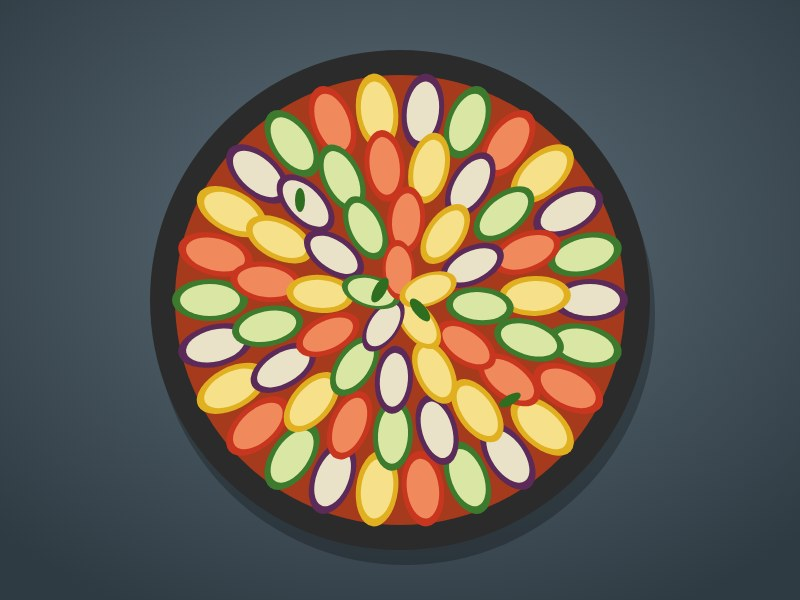

Ratatouille

Description
A traditional vegetable stew from Provence. Simple, healthy and even better
the next day once all the flavors have blended together.
Ingredients
- 1 eggplant
- 2 zucchini
- 1 red bell pepper
- 1 yellow bell pepper
- 1 onion
- 3 garlic cloves
- 4 tomatoes
- Olive oil
- Thyme, bay leaf, salt and pepper
Steps
- Wash and cut all the vegetables into medium-sized cubes.
- Cook the onion and garlic in olive oil in a large pot.
- Add the peppers and cook for 5 minutes.
- Add the eggplant and zucchini and cook for another 10 minutes.
- Add the tomatoes, thyme and bay leaf, then season.
- Cover and simmer on low heat for 45 minutes, stirring from time to time.
Back to recipes